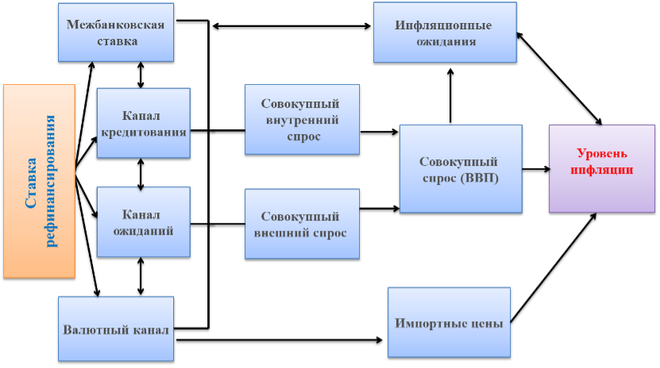

Денежно-кредитная политика (краткое изложение)
| Основная цель Национального банка Таджикистана | Достижение и поддержание стабильного уровня внутренних цен в долгосрочной перспективе |
| Денежно-кредитная политика | Режим таргетирования инфляции |
| Целевой показатель инфляции | 5% ±2 п.п. (для 2026 года) |
| Как мы удерживаем инфляцию в рамках целевого показателя? | Посредством использования инструментов и трансмиссионного механизма ДКП, в частности установления:
|
| Трансмиссионный механизм | Через четыре канала:
|
| Ставка рефинансирования | 7,00% (с 02 февраля 2026) |
| Процентный коридор (ставки по кредитам и депозитам овернайт) |
Верхняя граница (ставка рефинансирования +3 п.п.): 10,00% Центр (ставка рефинансирования): 7,00% Нижняя граница (ставка рефинансирования −3 п.п.): 4,00% |
| Кто принимает решения по денежно-кредитной политике? | Решения принимает Комитет по ДКП Национального банка Таджикистана, заседающий не менее 4 раз в год. Комитет ежеквартально отчитывается перед Правлением Национального банка Таджикистана. |
| Как разъясняются решения по денежно-кредитной политике | Соответствующая информация публикуется после каждого заседания Комитета по ДКП, а также в ежемесячных, ежеквартальных отчётах и документе «Основные направления ДКП РТ», ежегодно представляемом в Маджлиси намояндагон не позднее 1 ноября |
| Правовая основа | Закон Республики Таджикистан «О Национальном банке Таджикистана» и иные нормативные правовые акты» |
Согласно статье 5 Закона «О Национальном банке Таджикистана» основная цель Национального банка Таджикистана — достижение и поддержание стабильного уровня внутренних цен (уровня инфляции) в долгосрочной перспективе.
Дополнительные цели Национального банка Таджикистана, реализуемые с учётом приоритета основной цели:
Данный закон также устанавливает, что получение прибыли не является целью Национального банка Таджикистана
Инфляция - это рост общего уровня цен.
Стабильная инфляция означает, что цены в экономике стабильны и находятся в рамках целевого показателя (5% ±2 п.п.).
Когда уровень инфляции стабилен:
Стабильный уровень инфляции имеет важное значение для устойчивого экономического развития каждой страны, в особенности Республики Таджикистан. Это связано с тем, что население страны значительную часть своих доходов расходует на покупку продуктов питания, большинство из которых являются импортными товарами. В случае резкого повышения цен на продукты питания или импортные товары это напрямую окажет негативное влияние на уровень повседневной жизни и доверие населения.
В настоящее время опыт центральных (национальных) банков и аналитические исследования учёных всех стран мира доказали, что проведение денежно-кредитной политики оказывает влияние только на уровень инфляции в долгосрочном периоде и лишь посредством поддержания умеренного уровня инфляции может оказать положительное воздействие на другие макроэкономические показатели.
Именно по этой причине большинство центральных (национальных) банков, которые обладают исключительным правом эмиссии наличных денег и несут ответственность за разработку и проведение денежно-кредитной политики, рассматривают поддержание стабильного уровня цен (инфляции) в качестве своей основной цели.
Для поддержания стабильности инфляции, Национальный банк Таджикистана применяет совокупность инструментов и мер, которые называют денежно-кредитной политикой.
Денежно-кредитная (монетарная) политика – один из основных разделов макроэкономической политики государства, которая реализуется для достижения главной цели, а именно обеспечения стабильного уровня цен в долгосрочном периоде, посредством использования инструментов денежно-кредитной политики (монетарных рычагов).
Монетарная политика представляет собой совокупность мер и действий центрального (национального) банка, направленных на воздействие на экономику страны через управление денежной массой, процентными ставками и доступностью кредитов.
Основной целью денежно-кредитной политики Национального банка Таджикистана является поддержание уровня инфляции в пределах установленного целевого показателя (5% ±2 п.п.).
В рыночной экономике таргетирование инфляции — один из современных режимов денежно-кредитной политики для поддержания стабильного уровня внутренних цен (инфляции) в рамках установленного целевого показателя.
Согласно экономической литературе и практике центральных банков в рамках режима таргетирования инфляции центральные банки объявляют числовой целевой ориентир по инфляции на среднесрочный период и обязуются достичь его с помощью инструментов монетарной политики, прежде всего краткосрочной процентной ставки.
Иными словами, таргетирование инфляции — это современный режим денежно-кредитной политики, в рамках которого Национальный банк Таджикистана:
В настоящее время данный режим применяется большинством стран региона и мира, в том числе Новой Зеландией, Австралией, Бразилией, Россией, Казахстаном, Узбекистаном, Украиной, Арменией, Грузией и другими странами.
Согласно экономической литературе, уровень допустимой инфляции для экономики развивающихся стран является естественным и важным.
Следует отметить, что, несмотря на прогресс и значительные достижения в различных секторах, Республика Таджикистан как неотъемлемая часть мировой экономики по-прежнему уязвима к внешним факторам и рискам, особенно к изменениям мировых цен на продукты питания и топливо. В связи с этим, согласно анализу и наблюдениям, в настоящее время установление целевого уровня инфляции в пределах 5% ±2 п.п. для экономики Республики Таджикистан является целесообразным. Достижение этой цели создаёт возможность обеспечить устойчивое развитие экономики страны на необходимом уровне.
Эта цель установлена в соответствии с документом «Основные направления денежно-кредитной политики Республики Таджикистан на 2026 год и среднесрочный период», утверждённым решением Маджлиси Намояндагони Маджлиси Олии Республики Таджикистан (№214 от 27 ноября 2025 года).
В начале переходных лет к режиму таргетирования инфляции, то есть в 2017 году, цель инфляции была установлена на уровне 7% ±3 п.п., и постепенно снижена до 5% ±2 п.п. В дальнейшем, в зависимости от устойчивого развития экономики, среднего финансового роста и дальнейшего повышения эффективности рычагов денежно-кредитной политики, данная цель будет корректироваться.
Допуск (предел) ±2 п.п. признаёт, что уровень инфляции может временно колебаться выше или ниже 5%. Это связано с тем, что в настоящее время зависимость экономики страны от состояния мировой экономики остаётся значительной, и полностью исключить негативное влияние внешних факторов, особенно импортной инфляции (вследствие роста цен на импортные товары), невозможно.
До перехода к режиму таргетирования инфляции (до 2025 года) Национальный банк Таджикистана реализовывал режим таргетирования денежно-кредитной политики (посредством определения объёма денежной массы в экономике). Следует отметить, что цель этих программ (монетарной и инфляционной) была одна — стабильность уровня цен, однако способы её достижения различались:
| Характеристика | Монетарный режим | Режим таргетирования инфляции (c 2026) |
|---|---|---|
| Цель | Стабильность цен | Поддержание инфляции в рамках цели |
| Основной инструмент | Резервные деньги | Ставка рефинансирования |
| Промежуточная цель | Денежные агрегаты | Прогноз уровня инфляции |
| Роль инфляционных ожиданий | Второстепенная | Основная |
| Денежное предложение | Плановое (ограничение денежного предложения) | Зависит от спроса |
| Режим валютного курса | Фиксированный или управляемое плавание | Управляемое плавание или свободное плавание |
| Коммуникация с населением | Не обязательна | Обязательна, полностью разъясняется. |
| Прогнозирование показателей | Второстепенное значение | Обязательно |
| Теоретические факторы инфляции | Только монетарный фактор | Монетарные, спроса и предложения |
| Эффективность по оценкам учёных | Низкая | Высокая |
| Прозрачность | Низкая | Высокая |
| Понятность для общества | Сложная (деньги/агрегаты/инфляция) | Простая (цены/инфляция) |
Почему предыдущий режим перестал быть эффективным? Монетарное таргетирование требует значительной зависимости между объёмом денежной массы и уровнем инфляции. Ранее в экономике Республики Таджикистан эта зависимость была относительно стабильной, однако в результате экономического прогресса, развития финансовой системы, увеличения объёмов инвестиций и значительного притока иностранной валюты со временем она ослабла и стала неэффективной, поэтому в дальнейшем контроль за объёмом денежной массы отдельно не сможет обеспечить стабильный уровень инфляции.
В связи с этим Национальный банк Таджикистана с 2012 года принял решение постепенно переходить к режиму таргетирования инфляции с учётом реализации необходимых реформ.
Национальный банк Таджикистана готовился к переходу на данный режим около 14 лет (2012-2025).
- совершенствование инструментов денежно-кредитной политики и введение инструментов постоянного действия;
- укрепление аналитического и прогнозного потенциала сотрудников; разработка прогнозных моделей макроэкономического и эконометрического анализа;
- содействие развитию банковской системы и финансового посредничества;
- улучшение коммуникации с населением страны;
- совершенствование управления международными резервами;
- переход к режиму управляемого плавающего валютного курса;
- снижение долларизации экономики;
- повышение доверия к национальной валюте (сомони) и др.
- укрепление трансмиссионного механизма ДКП;
- введение механизма усреднения обязательных резервов кредитных организаций;
- продолжение сотрудничества с международными финансовыми организациями в области развития денежного рынка;
- разработка и совершенствование нормативно-правовой базы;
- постепенное снижение целевого показателя инфляции до 5% (±2 п.п.);
- привлечение технической помощи для повышения аналитического потенциала;
- разработка механизма прогнозирования ликвидности кредитных организаций и др.
Основным инструментом денежно-кредитной политики Национального банка Таджикистана в режиме таргетирования инфляции является ставка рефинансирования.
Согласно Закону «О Национальном банке Таджикистана», ставка рефинансирования — минимальная процентная ставка, по которой Национальный банк предоставляет кредиты кредитным организациям, или доходная ставка для исламских кредитных организаций.
Ставка рефинансирования — основной инструмент для проведения монетарных операций, устанавливается на основе всестороннего анализа целевых показателей, возможных рисков и позиции денежно-кредитной политики.
Ставка рефинансирования выполняет сигнальную функцию, характеризуя направление денежно-кредитной политики на будущий период.
В зависимости от отклонения ставки рефинансирования от равновесного уровня определяется позиция денежно-кредитной политики. Равновесный уровень ставки называют нейтральной процентной ставкой.
Нейтральная процентная ставка — среднее значение реальной ставки рефинансирования (ставка рефинансирования минус инфляция) за прошлые годы плюс прогноз инфляции.
Равенство ставки рефинансирования нейтральному уровню свидетельствует о балансе спроса и предложения, устойчивом росте экономики и стабильности инфляции.
Если ставка выше (ниже) нейтрального уровня, это сигнализирует о жёсткой (стимулирующей) позиции денежно-кредитной политики.
Ставка рефинансирования устанавливается на заседаниях Комитета по денежно-кредитной политики на основе макроэкономического прогноза, экономической ситуации в странах — торговых партнёрах, тенденций мировых цен и инфляционных ожиданий путём голосования не менее 2/3 членов Комитета.
В рамках режима таргетирования инфляции, когда прогноз и ожидания инфляции превышают цель, ставка повышается; если ниже — понижается.
Подробнее об инструментах денежно-кредитной политики см. на странице «Инструменты денежно-кредитной политики».
Ставка рефинансирования влияет на другие показатели в рамках процентного коридора.
| Ставка | Значение |
|---|---|
| Верхняя граница (ставка по кредитам овернайт) | ставка рефинансирования + 3 п.п.(10,0%) — ставка, по которой Национальный банк предоставляет кредитным организациям кредиты овернайт. |
| Центр (ставка рефинансирования) | 7,0% — ключевая ставка ДКП. |
| Верхняя граница (ставка по депозитам овернайт) | ставка рефинансирования − 3 п.п.(4,0%)% — ставка, которую Национальный банк кредитным организациям выплачивает кредитным организациям за привлечение депозитов овернайт. |
| Краткосрочная межбанковская ставка | Операционная цель режима таргетирования инфляции; поддерживается в рамках коридора вблизи ставки рефинансирования. |
В режиме таргетирования инфляции краткосрочная межбанковская ставка является операционной целью. Национальный банк с помощью инструментов денежно-кредитной политики, в том числе инструментов постоянного действия (ставка по кредитам овернайт = ставка рефинансирования +3,0 п.п.; привлечение депозитов овернайт −3,0 п.п.) и выпуска ценных бумаг поддерживает её вблизи ставки рефинансирования.
Национальный банк Таджикистана использует следующие инструменты ДКП:
Подробнее см. страницу «Инструменты денежно-кредитной политики».
В Национальном банке Таджикистана решения об определении позиции денежно-кредитной политики и применении инструментов денежно-кредитной политики возложены на Комитет по денежно-кредитной политики.
Комитет по денежно-кредитной политики — постоянно действующий независимый консультативный орган, функционирующий в соответствии с Законом «О Национальном банке Таджикистана», Основными направлениями денежно-кредитной политики РТ и иными нормативными правовыми актами Национального банка Таджикистана.
Положение, состав, функции и порядок работы Комитета утверждаются Правлением Национального банка. Председатель Национального банка является Председателем Комитета по денежно-кредитной политики.
Подробнее см. страницу «Комитет по денежно-кредитной политики НБТ».
При изменении Национальным банком ставки рефинансирования её воздействие на уровень цен охватывает определённый период. Изменение ставки влияет на экономические показатели постепенно — этот механизм называется трансмиссионным механизмом денежно-кредитной политики.
Трансмиссионный механизм денежно-кредитной политики реализуется через следующие каналы:

Для справки: В Таджикистане, как и в других странах региона, полный эффект изменения ставки на цены охватывает несколько кварталов. Поэтому Национальный банк принимает решения по денежно-кредитной политики с учётом прогноза уровня инфляции на среднесрочный период.
В Национальном банке Таджикистана прогноз инфляции определяется с помощью различных эконометрических и макроэкономических моделей, разработанных совместно с международными финансовыми организациями.
Модель — совокупность упрощённых взаимозависимостей для анализа экономических процессов и составления прогнозов.
В прогнозе учитываются все возможные внутренние и внешние факторы, включая макроэкономическую ситуацию, инфляционные ожидания, состояние экономики стран-партнёров, мировые цены на товары и иные возможные риски.
Таким образом, дальнейшая позиция денежно-кредитной политики определяется на основе прогноза инфляции.
Денежно-кредитная политика оказывает следующее воздействие на повседневную жизнь население населения:
Не все инфляционные факторы связаны с денежно-кредитной политики. Существуют факторы, для устранения которых Национальный банк Таджикистана совместно с министерствами принимает меры:
1) Изменение мировых цен;
2) Экологические изменения;
3) Геополитическая ситуация;
4) Инвестиционный климат;
5) Зависимость от импорта;
6) Административные факторы;
7) Сезонные факторы;
8) Изменение фискальной политики;
9) Структурные факторы;
10) Мировая финансово-экономическая ситуация.